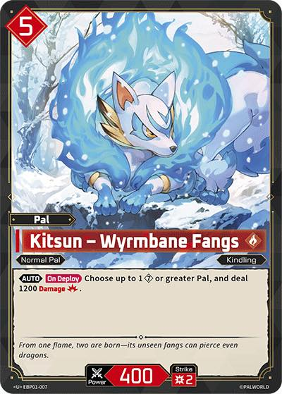
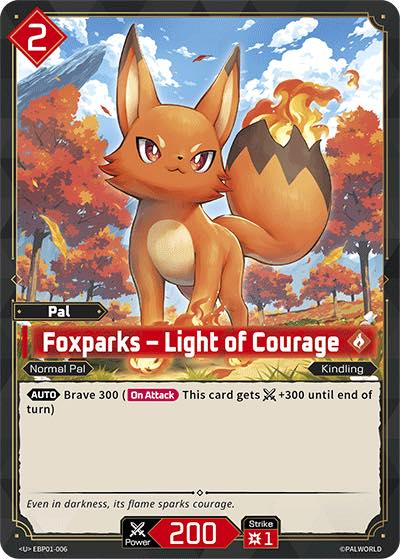
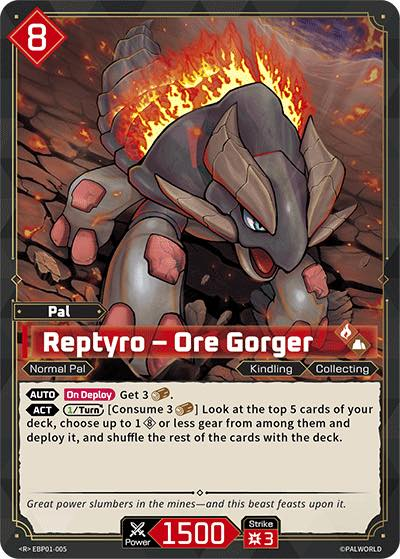

Continuous scan
Review this session
Every capture stays here until you finish. Raw cards can have extra copies or the exact printing corrected; every capture can be undone.

Lamball
EBP01-007 · My Collection · raw copiesQty 2

Chikipi
EBP01-006 · My Collection · raw copies
Foxparks
EBP01-005 · My Collection · graded